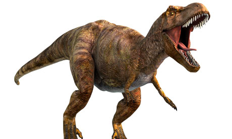

Tyrannosaurus Rex
Tyrannosaurus meaning "tyrant lizard", from the Ancient Greek tyrannos "tyrant", and sauros "lizard" is a genus of coelurosaurian theropod dinosaur. The species Tyrannosaurus rex (rex meaning "king" in Latin), is one of the most well-represented of the large theropods. Tyrannosaurus lived throughout what is now western North America, on what was then an island continent known as Laramidia. Tyrannosaurus had a much wider range than other tyrannosaurids. Fossils are found in a variety of rock formations dating to the Maastrichtian age of the upper Cretaceous Period, 68 to 66 million years ago. It was the last known member of the tyrannosaurids, and among the last non-avian dinosaurs to exist before the Cretaceous–Paleogene extinction event.
Like other tyrannosaurids, Tyrannosaurus was a bipedal carnivore with a massive skull balanced by a long, heavy tail. Relative to its large and powerful hind limbs, Tyrannosaurus fore limbs were short but unusually powerful for their size and had two clawed digits. The most complete specimen measures up to 12.3 m (40 ft) in length, up to 3.66 meters (12 ft) tall at the hips, and up to 10.2 metric tons (11.2 short tons) in weight. Although other theropods rivaled or exceeded Tyrannosaurus rex in size, it is still among the largest known land predators and is estimated to have exerted the largest bite force among all terrestrial animals. By far the largest carnivore in its environment, Tyrannosaurus rex was most likely an apex predator, preying upon hadrosaurs, ceratopsians, and possibly sauropods. Some experts, however, have suggested the dinosaur was primarily a scavenger. The question of whether Tyrannosaurus was an apex predator or a pure scavenger was among the longest ongoing debates in paleontology. It is accepted now that Tyrannosaurus rex acted as a predator, and scavenged as modern mammalian and avian predators do.
A 2012 study by scientists Karl Bates and Peter Falkingham suggested that the bite force of Tyrannosaurus could have been the strongest of any terrestrial animal that has ever lived. The calculations suggested that adult T. rex could have generated from 35,000 to 57,000 Newtons of force in the back teeth.However, even higher estimates were made by professor Mason B. Meers of the University of Tampa in 2003. In his study, Meers estimated a possible bite force of around 183,000 to 235,000 Newtons or 18.3 to 23.5 metric tons (20.2 to 25.9 short tons). Research done by Stephan Lautenschlager et al. of the University of Bristol, also reveals Tyrannosaurus was also capable of a maximum jaw gape of around 63.5 degrees, a necessary adaptation for a wide range of jaw angles in order to power the creature's strong bite.
Go back to learn more